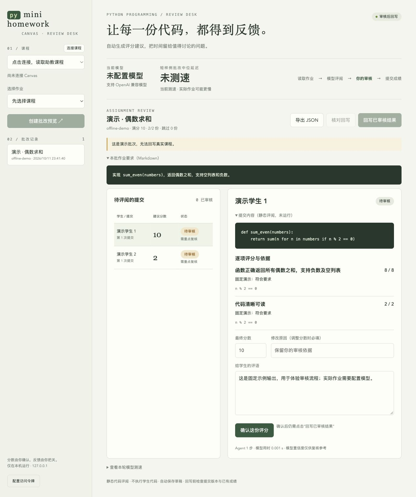

复旦 eLearning 与 Canvas
使用账号已有的课程权限，也可以配置其他学校的 Canvas LMS 地址。
你写清题目和评分要求，轻量 Agent 给出分数与反馈。每份结果由你审核，再明确回写到 Canvas。
requirements.md ↓ mini-homework-agent ↓ score + evidence + feedback ↓ your review → explicit publish Read an example requirement ↗
粘贴 Markdown 或选择 .md 文件；其中的明确评分表可以直接作为 rubric。
读取 Canvas 提交或本地代码，查看逐项分数、代码证据与模型/工具轨迹。
修改评语和分数，逐份确认，再明确提交到 Canvas。
# Python 3.10+ · macOS / Linux / WSL git clone https://github.com/chaoyuhao/mini-homework-agent.git cd mini-homework-agent python3 -m venv .venv source .venv/bin/activate pip install -e '.[pdf]' # No credentials or network calls mini-homework-agent demo --offline mini-homework-agent serve # Open http://127.0.0.1:8765
使用账号已有的课程权限，也可以配置其他学校的 Canvas LMS 地址。
核心来自 mini-swe-agent。作业专用工具只读材料、检查语法和校验分数，不执行学生代码。
支持 OpenAI 兼容服务和本机模型。先比较短样例速度，再用自己的已评作业校准质量。

截图仅使用合成学生和示例代码。当前界面为中文，文档同时提供中英文。
可以。离线演示使用两份固定的合成示例，不连接模型或真实课程，也不能回写成绩。它展示审核流程，不代表 AI 准确率。
可以。CLI 接收课程、作业 ID 和 Markdown 要求文件。Agent 集成指南说明如何生成草稿以及保留人工审核边界。
不会。当前支持文件读取与 AST 语法检查，不运行代码或查重；可选本机 OCR 读取截图和文档图片。静态评分建议仍需你审核。
要求与提交正文会发送到你配置的模型服务。程序不主动发送凭证和学生元数据，但正文里的个人信息仍可能包含在内。草稿和轨迹保存在本机。